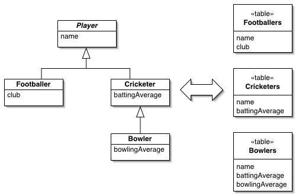

Concrete Table Inheritance (Наследование с таблицами конечных классов)

Паттерн проектирования Concrete Table Inheritance
Описание Concrete Table Inheritance
Представляет иерархию наследования классов в виде структуры БД, когда одна таблица отвечает целиком одному классу.
Проблема объектно-реляционного взаимодействия заключается в отсутствии поддержки наследования в РБД. Если рассматривать таблицы с объектной точки зрения, есть смысл записывать каждый объект в отдельную запись в БД. Такой подход реализует паттерн Concrete Table Inheritance, в котором каждому конкретному классу из иерархии наследования соответствует своя таблица.
Использована иллюстрация с сайта Мартина Фаулера.